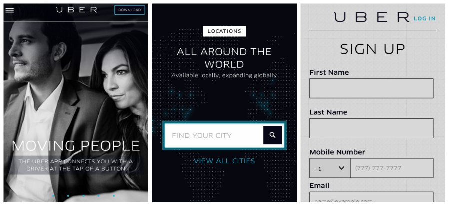
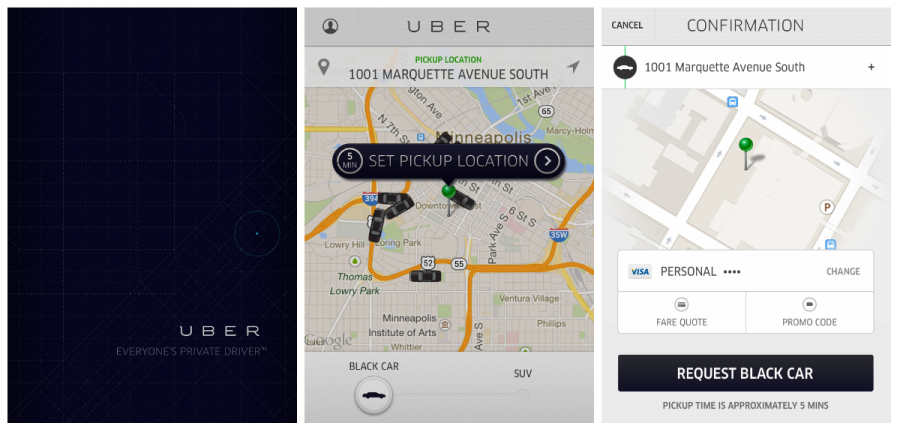
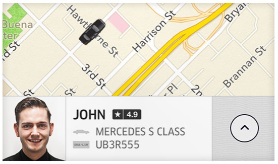
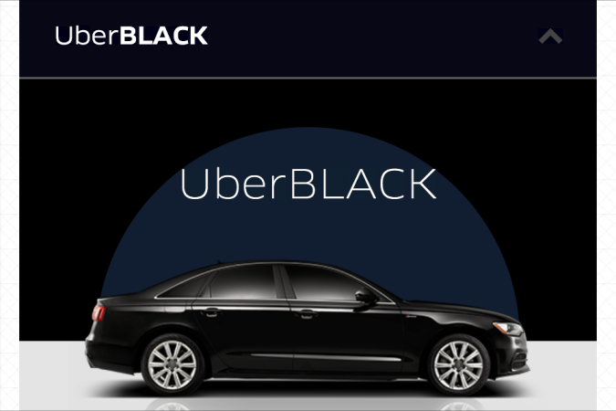
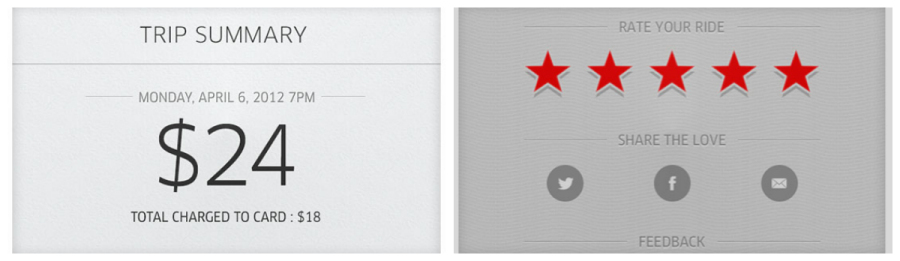
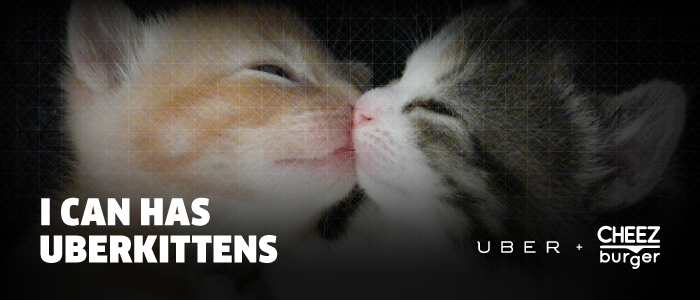

“Hello! I would like to request a taxi?” I spoke frantically into my phone.
The woman at the end of the line responded, “I’m sorry, madam. You’re going to have to wait 40 minutes for the next available driver.”
Frustrated, I hung up the call and threw the phone at my pillow. That was the fifth cab company that I had called, and as I checked the time, I started to panic. I had twenty minutes to get to the restaurant at the other side of town, and I still had not found a ride.
I think most of us have experienced the troublesome pains and stresses associated with hailing a taxi. But worry no more, as Uber is here! Uber is a San Francisco-based technology startup whose mobile app provides an on-demand car transportation service in major cities across the globe. And by on-demand, I mean on-demand.
Uber is a product that has taken my breath away. The product expertly infuses mobile technology with transportation and boasts of features that tackle the entire spectrum of problems users may encounter in a traditional, taxi experience.
From the get-go, Uber made it convenient for me to find a ride in an unfamiliar setting. I was in Minneapolis, MN attending the Grace Hopper Conference, and after a hectic day at the event, the thought of reserving a taxi for a company dinner that night had not crossed my mind until an iPhone alert reminded me to do so thirty minutes prior to the start of the dinner. I rushed back to my hotel room, and proceeded to call a series of local taxi services that I found through Yelp.
After failing to secure a ride, I decided to see if Uber was available in Minneapolis. I got lucky. With only fifteen minutes on the clock, I pulled up Uber on my phone’s browser and quickly signed up for its service. Although I was in a rush, I was still amazed by how hassle-free the registration procedure was. It seemed like Uber knew that I had no time to waste. The signup form was clear, concise, and sleek, conferring a comforting sense of the product’s professionalism and reliability to a first-time user. Within seconds, my personal info and credit card was approved. I had spent less time signing up for Uber than waiting for a local cab company to answer my calls.

Despite my pressed circumstances, as a first-time user, I was still surprised by the intuitiveness and informativeness of the mobile app’s user interface. After opening the app, I was presented with a map that pinpointed my current location, a menu that enabled me to select my desired form of transportation, and an approximate wait time for pickup. After requesting a black car and setting up my pickup location, I was taken to the confirmation page to input the address of my final destination. The confirmation page also made it convenient for me to have checked for the fare quote of my requested ride, but since I was tight on time and Uber was my last ride option, I immediately tapped the black “Request Black Car” button.

After successfully requesting a ride, I was taken to another screen that informed me of my approximate three-minute waiting time and the current location of the driver. I was also presented with a picture of what he looked like, his phone number, and the type of car he was driving to pick me up. I breathed a sigh of relief. The mobile app made the process of requesting a ride fluid and effortless, and it provided clear and concise ride information to prevent any user confusion.

While barely stepping outside of my hotel room door (and within thirty seconds of my Uber reservation), I heard my phone rang. It was my driver. He called to notify me that he was running late because his phone GPS had trouble pinpointing my pickup location, I told him that I would wait for him in front of the hotel lobby, but I was getting worried, as there was only ten minutes left before the dinner started.
And wait for him I did not. As soon as I took the elevator down to the hotel lobby and walked out the front door, my jaws dropped. There, right on time, was my very own private driver opening the passenger door of a luxurious Lincoln Town Car.

My prior experiences with traditional taxi services have not been so great. When I place a request for a cab (and usually, this requires several calls to different services), I would receive a fairly broad estimation (10-15 minutes) of my wait time from the driver. Sometimes, when the taxi driver was running late (and he knew that he was running late), he never bothered to notify me of his tardiness. In worst cases, the time that I had spent waiting for my driver was three times longer (30-45 minutes) than his estimation.
And when the driver finally arrived to pick me up, the ride experience and customer service was nowhere near as professional and courteous as that of Uber’s. During the ride, the taxi driver would get lost despite his claims of knowing where he was going. Sometimes, the driver would take the longer route just to clock some additional mileage on the meter. Either way, I would (unhappily) end up paying a higher price than the one I had originally anticipated.
Uber’s product has definitely raised the bar for an on-demand transportation service. The mobile app eliminates the troubles associated with finding and waiting for unpredictable taxis and potentially unreliable, unpleasant taxi drivers. In addition, the app delivers the elite limo experience it promises with no hidden charges or fees. Not only was my driver impeccably on time despite notifying me that he was running late, he was also extremely cordial and polite throughout my entire ride. After hearing that I was in a rush to get to the restaurant, my driver took the quickest route he knew to the other side of downtown Minneapolis, and dropped me off at my destination right on schedule.
As a consumer-facing product, Uber provides transparency of credit card charges to users and values customer feedback to maintain and improve the quality of its product and its fleet of drivers and vehicles. After I said goodbye to the driver, the mobile app conveniently notified me of the cost of the ride that was charged to my credit card on file. In addition, it requested my evaluation of the driver. I was more than happy to give him five stars.

With such a well-thoughtout, well-rounded, technology-based platform, Uber is disruptive. From a design perspective, the sleekness, simplicity, and informativeness of the mobile application’s user interface conveys a sense of professionalism and reliability that mirrors the high-standard qualities which characterize the company’s fleet of drivers and vehicles. In addition, not only has Uber successfully built a scalable business on its value proposition, “everyone’s private driver”, it has also created an innovative solution that integrates seamlessly into the modern lifestyle of the twenty-first century.
Despite the heavy anti-Uber regulations that the company has faced since the introduction of its service in major cities across the US, the product continues to be a growing force, backed by popular demand. It relieves users of the unnecessary stresses associated with hailing and waiting for unpredictable taxis. It provides a better, more reliable alternative than the traditional cab service, making the elite limo experience accessible to anyone at the press of a button.
Uber’s product can be easily extended into other delivery verticals without feature creeps; the company has already experimented with ice cream, barbecue, mariachi bands, and kittens (yes, kittens for National Cat Day) on its mobile platform. Even Google Ventures avidly believes in Uber’s future product potential (on-demand driverless cars anyone?), pouring a hefty 258 million dollars into the company’s recent Series C fundraising.

As for me, I am simply elated that I will never ever have to stress over tactless taxi services in my travels again. Now, wherever I go in the world that provides Uber service, I can easily pull out the Uber app on my phone, conveniently tap the “Request Black Car” button, and stylishly cab to wherever my day takes me.